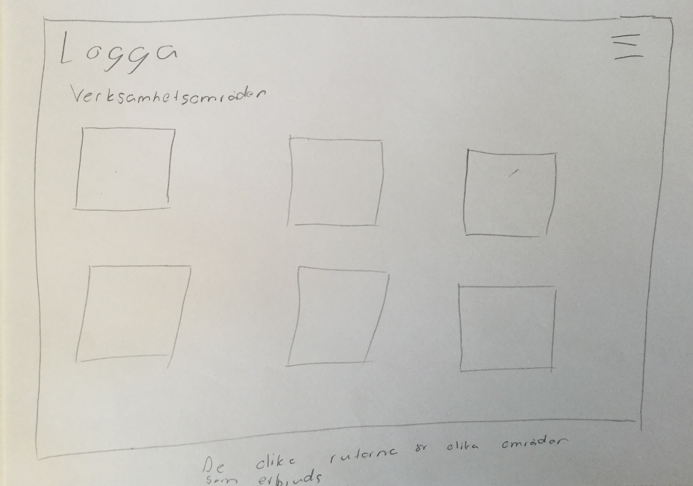
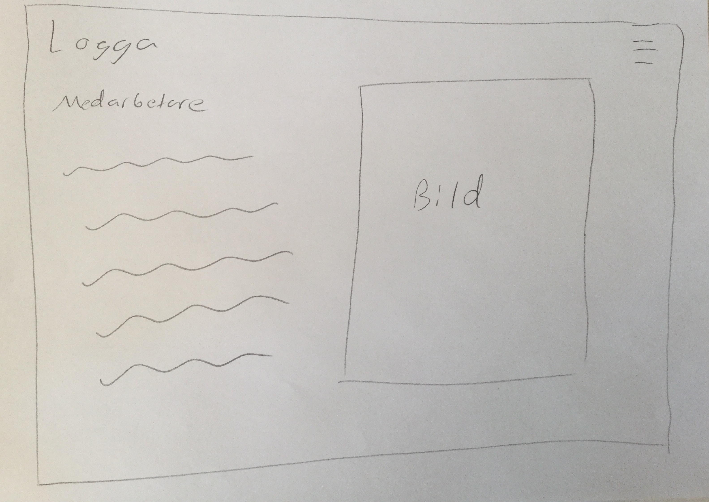
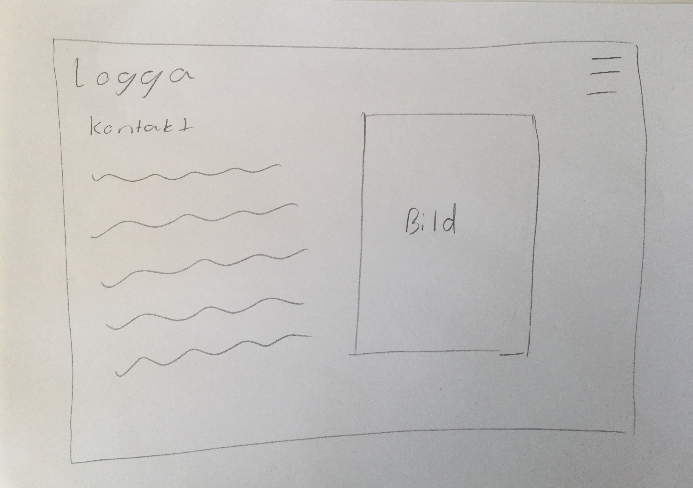
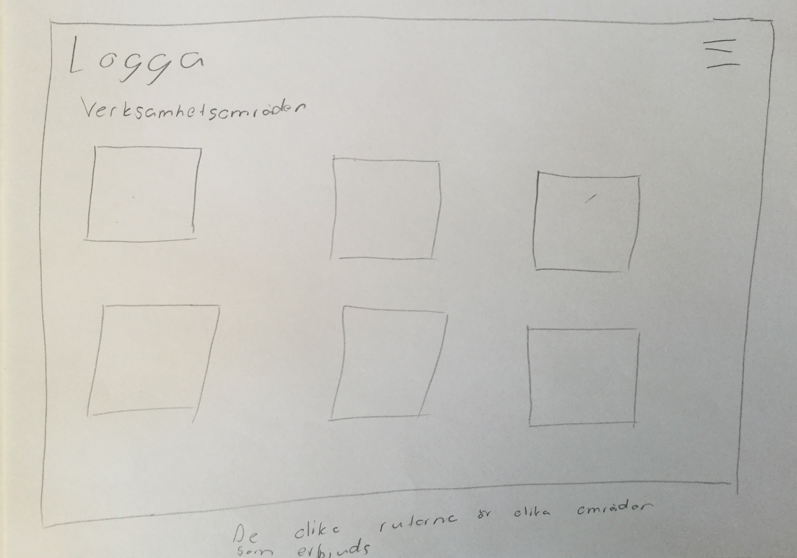
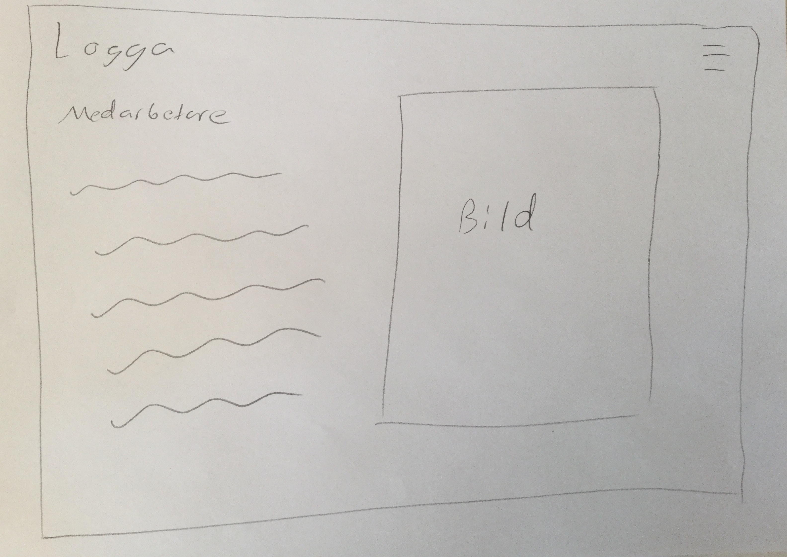
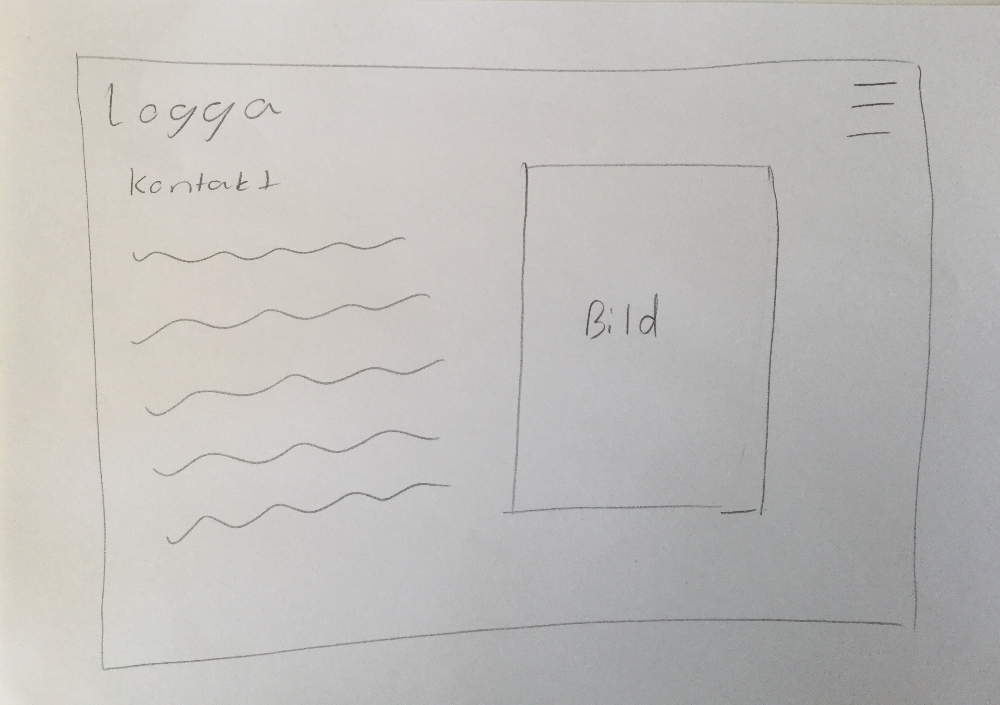

Idén med hemsidan är att göra en hemsida till min pappa. Han jobbar som jurist och vill ha en hemsdian där klienter kan hitta honom om de söker på hans namn. Målet med hemsdian är sedan att det ska finnas information om pappa, vilka tjänster han erbjuder. Målgruppen för hemsidan är därför personer som ska hitta information om pappa eller äldre klienter.
 Om byrån sidan. På denna sidan är tanken att det ska vara lite information om byrån i form av text och sedan med en bild vid sidan om. För att få detta att fungera kommer jag att göra ett gridsystem med antagligen en aside och en main, som jag sedan lägger brevid varandra.
Verksamhetssidan. På denna sidan kommer det vara rutor där de olika verksamhetsområderna står. Här kommer jag göra ett grid-system som är grid-template-columns där tre rutor kommer ligga brevidvarandra och sedan blir de en ny rad med tre till rutor.
Medarbetssidan. Denna sidan kommer att se lika dan ut som om byrån sidan. Därför kommer jag att använda mig utav samma grid-system där jag gör en till en aside och den andra till en main.
 Kontaktidan är den sista sidan på hemsidan och kommer också gå under samma design som om byrån och medarbetarsidan. Där jag kommer ha ett grid-system som är uppbyggt med en aside och en main brevid varandra.
Om byrån sidan. På denna sidan är tanken att det ska vara lite information om byrån i form av text och sedan med en bild vid sidan om. För att få detta att fungera kommer jag att göra ett gridsystem med antagligen en aside och en main, som jag sedan lägger brevid varandra.
Verksamhetssidan. På denna sidan kommer det vara rutor där de olika verksamhetsområderna står. Här kommer jag göra ett grid-system som är grid-template-columns där tre rutor kommer ligga brevidvarandra och sedan blir de en ny rad med tre till rutor.
Medarbetssidan. Denna sidan kommer att se lika dan ut som om byrån sidan. Därför kommer jag att använda mig utav samma grid-system där jag gör en till en aside och den andra till en main.
 Kontaktidan är den sista sidan på hemsidan och kommer också gå under samma design som om byrån och medarbetarsidan. Där jag kommer ha ett grid-system som är uppbyggt med en aside och en main brevid varandra.
De första två lektionerna ska jag arbeta med skisserna och försöka fundera ut en bra design på hemsidan. Sedan ska jag börja med att lägga grunden till hemsidan med grids. Målet där är att skapa ett gridsystem som ser bra ut och fungerar för både mobil och dator. Till vecka 7 tänker jag att jag ska vara klar med index sidan, för att sedan kunna börja med nästa sida på hemsidan. Något jag ska försöka med detta projektet är att vara nästan helt klar med sidan jag jobbar med innan jag skapar nästa och börjar på den.
| Vecka | På lektionen | Utanför lektionen |
|---|---|---|
| 4 | Planerar och skissar | Om jag inte blir färdig, jobbar jag ikapp hemma. |
| 5 | Forsätter med skisser, börjar med att lägga grunden på hemsidan i html respektive css. | Om jag känner att jag har hamnat bakom eller inte blir färdig, jobbar jag ikapp hemma. |
| 6 | Bygger vidare på grunden för hemsidan och ser till att gridet fungerar för både mobil och dator. Börja att lägga in bilder och information på hemsidan. | Arbeta med index sidan hemma om det behövs för att den ska bli klar. |
| 7 | Sportlov | Sportlov |
| 8 | Börja med andra sidan på hemsidan. Lägga grunden för andra sidan, ska försöka bygga den utifrån samma css som index sidan. | Arbeta med hemsidan hemma om det brhövs. |
| 9 | Arbete med andra sidan, målet är att försöka bli färdig med den till vecka 10. | Om jag inte blir färdig eller känner att jag har hamnat bakom, jobba ikapp hemma. |
| 10 | Börja med tredje sidan, lägga grunden och bygga från samma css. | Arbeta hemma om jag hamnar bakom. |
| 11 | Arbeta med fjärde sidan och femte sidan. | Om jag inte blir färdig med sidorna, gör klart de hemma till vecka 12. |
| 12 | Göra sista ändringar på hemsidan. Skriva utvärderingen och göra tester för att se om hemsidan fungerar. | Om jag inte blir färdig på lektionen, akriv klart utvärderingen hemma innan inlämningen. |
Under denna veckan har jag regestrerat mig på github och fixat så jag kan uppdatera mina filer allteftersom jag gör förändringar på min hemsida. Jag har även denna lektionen funderat på vad jag ska göra på min hemsida. Den hemsidan jag förmodligen kommer att göra är en hemsida till min pappa, om jag inte får någon annan idé. Jag har även börjat skissa lite på hur den hade kunnat se ut, men har inte bestämmt en design ännu. Till nästa gång ska jag tänka mer på hur designen på hemsidan kan se. Jag kanske även gör lite finslipningar på min skiss och gör klart den till nästa vecka, för att jag ska kunna börja att arbeta med hemsidan nästa lektion.
Under denna lektionen, hjorde jag klart min skiss till hemsidan. Har även skrivit och gjort en planering på hur jag ska lägga upp min tid framöver. Jag hann även att börja med basen på index sidan och började att göra ett grid-system som ska fungera för både dator och mobil. Något som jag ska fösöka göra tills nästa gång är att få en bättre bild på vad som ska finnas på hemsdian, genom att prata med pappa. Att jag inte riktigt vet vad som ska vara på hemsidan gör att jag inte har utnyttjat tiden helt under lektionen. Vilket är något jag ska ta med mig till nästa vecka för att kunnan använda tiden mer och få mer gjort på hemsidan.
Under denna lektionen har jag inte kommit super långt frammåt med min hemsidan. Men jag har kommit en bra bit om hur jag ska göra den, både med vad jag ska ha på hemsidan men också hu designen ska se ut. Under lektionen valde jag att göra om min skiss eftersom att jag fick nya idér än vad jag hade förra veckan. En av de nya idérna jag har är att göra en bild carousel, vilket jag även började kolla lite på i slutet av lektionen och kommer nästa gång att börja skriva koden i html och js.
Under denna lektionen har jag arbetat med min grund på första sidan, som är helt färdig. Jag har även hittat ett sätt att göra en carousel med hjälp av bara javascript. Ska arbeta lite hemma tills nästa vecka för jag känner att jag ligger lite bakom.
Under denna veckan har jag börjat på andra sidan av hemsidan. Den sidan kommer att vara en sida där de olika verksamhetsområderna kommar att finnas på. Jag har även börjat med att göra en hamburgarmeny som ska finnas på alla sidor. Tanken med menyn är att när man klickar på den kommer meny-knapparna att dyka upp från sidan och ligga öbver hela skärmen.
Under denna lektionen har jag arbetat med javascript ocg css. Jag arbetade med att få min meny att fungera, vilket jag nästan belv färdig med. Jag ska tills nästa vecka göra klart meny knappen. Sen hoppas jag att det kommer gå lite fortare att göra sidorna eftersom att det inte blir lika mycket nytt utan likandne saker jag gjort innan.
Under denna lektionen har jag gjort färdigt min meny-knapp så den fungerar. Jag har även fixat alla länkar mellan undersidorna. Sedan har jag gjort grunden på resten av alla sidorna, med gridsystem. Det jag har kvar att göra är att lägga in bilder och text på hemsidan, anpassa den för mobil och göra en logga. Om jag hinner göra en så alla områden är klickbara och man får upp en ruta med text, men det är bara om jag har tid eftersom att de kräver javascript och mycket css. Till nästa vecka ska jag arbeta hemma så jag kan hinna klart till vecka 12.
Under denna lektionen har jag snyggat till på Verksamhetssidan, där jag har gjort boxarna lite mindre och ändrat position på texten. Jag har även börjat lite med att göra en popup ruta som ska vara klickbar. Jag kommer att fortsätta arbeta med min hemsida för att den ska bli klar till på fredag.
När jag gjorde de olika testerna i webbläsarna fungerade det bra i både Chrome och i Firefox. Hemsidan aåg ut på liknande sätt i båda webbläsarna, förutom att någon bild var större i Firefox. Däremot när jag testade i Internet Explorer och Microsoft Edge fungerade hemsidan inte. Där var både länkarna, bilderna och mycket av texten blev placerad fel eller fel storlek. Min meny-knapp fungerade inte heller. När jag skulle fixa för att kunna testa den på mobil, lyckades inte jag med det. Däremot är koden mobilanpassad med "@media screeen" och testad i mobilläge på datorn, men tyvärr inte testad på en mobiltelefon. När jag har testat mina html filer och css filer på html/css validator, fick jag inga fel på mina html sidor men ett fel på min css. Felet med min css var att jag lagt in en färg genom att skriva bokstäver och siffror vilket den inte gillade. För att fixa de skrev jag färgen som en rgba() istället. Eftersom att bakgrunden på hemsidan är vit och texten är svart passar de färgerna bra ihop och är lätt att läsa, vilket även contrastchecker tycker.
Jag blev överlag väldigt nöjd med slutresutatet på min hemsida. Jag blev speciellt nöjd med första sidan då jag gillar den stilrena designen. Jag blev även väldigt nöjd med min meny-knapp som jag tycker fungerar bra och ger en proffsig stil på hemsidan. Däremot tog den alldeles för långtid att göra, vilket om jag hade gjort om projektet hade antagligen inte börjat att göra den utan gjort den i slutet om jag hade haft tid. Något annat som jag även velat ändra på var att jag igentligen skulle gjort att man hade kunnat klicka på rutorna med de olika områderna för att få mer information. För att göra det hade jag behövt mer javascript, vilket jag kännde att jag inte hade tiden för att få det att fungera. Om jag hade fått det att fungera hade hemsidan fått ett lyft eftersom att det blivit mer en riktig hemsida. Något som jag också hade gjort bättre var att följa min planering. Planeringen som jag gjorde följde jag nästan aldrig utan hamnade efter redan från början. Men om jag hade följt den tror jag att jag hade behövt stressa mindre för att bli färdig i slutet. För att jag skulle följa min planering bättre tror jag att jag hade fått lägga mer tid på att göra min planering, så att det som jag hade tänkt få gjort på lektionen faktiskt går att få klar på lektionen. Som jag sa i början är jag nöjd med slutresultatet på hemsidan och jag känner att jag har utvecklats och lärt mig mycket under detta projekt.